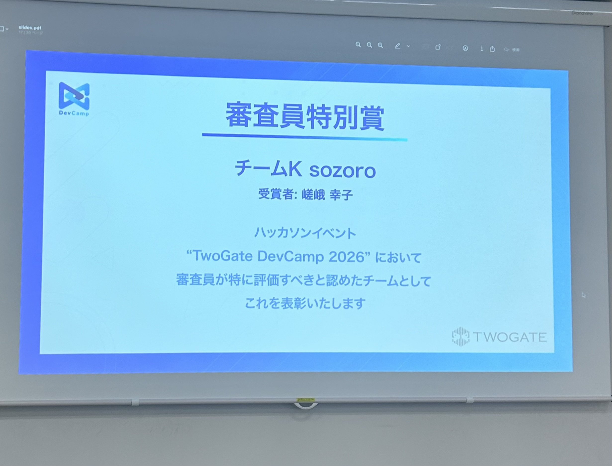

あばうとみー
神山まるごと高専3期生（現在2年生）の嵯峨幸子です。
最近すきだった漫画はガールズ・アット・ジ・エッジっていう小説のコミカライズです。
2009年12月21日生まれです。
映画を人生で3本くらいしかみた事ないことがなかなかに大きい恥だと認識しています。
一番すきだった映画はスーサイドファミリーです。
最も古い記憶は母親にもらったお菓子を蟻にあげて（反応を見てみたかったので）怒られたことです。
去年の秋くらいからのマイブームが絵を描くことです。
おおきくなったらエベレストを踏み潰して世界で二番目に高い山に脚光を浴びさせてあげたいです。
モノづくり派かコトおこし派かでいうとモノづくり派です。
わーくす
資格更新ノート
専門医資格の管理アプリ
取り組んだテーマ
twogatedevcamp2026に個人参加して、あなたが深く知る一人の、困りごとを解くというテーマのもとに外科医である父の困りごと、専門医資格の管理ができるwebアプリを開発しました。父にアプリ開発やデザインの知識がなく、思い描いているもののヒアリングには苦労しましたが、複数の案を作成してそこからそれがイメージに近いか選んでもらったり他の機能が欲しいなどアドバイスをもらうことで父の理想に近いものができたのではないかと考えています。
サービス概要
複数ありそれぞれ更新期間や更新条件が違う専門医資格をまとめて管理できるようになるアプリです。
複数の資格について、更新期限・必要単位・研修実績・参加証を整理し、資格ごとの取得状況や不足している条件を確認できます。資格の有効期限、単位の算入期限、更新申請の締切をそれぞれ分けて管理できる点も特徴です。
参加証の画像やPDFを取り込むと、AIが研修名・開催日・主催者・単位数などを抽出し、利用者が内容を確認して登録できます。一つの研修実績に対して複数資格への単位の割り当てを設定できるほか、今後参加する研修も登録し、取得済みの単位と取得予定の単位を分けて把握できます。
更新期限が近づいた際の通知に加え、申請準備用の情報をまとめたPDFや、参加証を同梱したZIPの出力にも対応しています。スマートフォンのホーム画面に追加して利用でき、登録データのクラウド同期やバックアップ・復元も行えます。
使用技術
- フロントエンド
- Flutter、Dartアプリの画面・操作の実装
- バックエンド
- TypeScript、Node.js、Vercel Functionsデータ同期や各種APIの処理
- データベース
- Neon PostgreSQL資格・研修実績・更新条件などの保存
- 認証
- Firebase AuthenticationGoogleアカウントによるログイン
- ファイル保存
- Vercel Blob参加証・公式資料・バックアップの非公開保存
- AI
- OpenAI Responses API参加証から研修名・開催日・単位などを抽出
- 端末内OCR
- Apple Vision（iOS）、Google ML Kit（Android）画像・PDFの文字認識
- 通知・定期処理
- Web Push、Vercel Cron更新期限の通知、公式資料の定期取得
- PWA・ホスティング
- Service Worker、Vercel
追記
twogatedevcamp2026では審査員特別賞をいただきました！

メッセージウィンドウジェネレーター
ノベルゲーム等で登場キャラクターの発言内容が記されるメッセージウィンドウのジェネレーター
取り組んだテーマ
ノベルゲームの文化が好きで、自分の書いた絵などでノベルゲームのスクリーンショットのような雰囲気の画像を作れたら楽しいのではないかと思い立ち、可愛らしくて使いやすいメッセージウィンドウのジェネレーターをテーマに作成しました。
サービス概要
好きな写真やイラストに名前とセリフを重ね、ノベルゲームのワンシーンのような画像を作成できるWebアプリです。入力内容をプレビューで確認しながら編集でき、クリックで2つのセリフを切り替える演出にも対応しています。作成した場面はPNG画像として保存・共有できます。
使用技術
- フロントエンド
- Flutter Web、Dart画面・操作の実装
- 画像読み込み
- file_picker端末から写真・イラストを選択
- 画像合成・書き出し
- RepaintBoundary、dart:ui画像とメッセージウィンドウを合成し、PNGへ変換
- フォント
- google_fonts（DotGothic16）ゲームらしいドット調の文字表現
- アニメーション
- AnimationController、AnimatedBuilderセリフ送りマークの点滅
- 保存・共有
- Web Share API、package:web、dart:js_interop共有メニューの呼び出し、画像ダウンロード
KASHIKA
ARwebアプリ
取り組んだテーマ
去年度に学内で描いた絵や作ったデザインを展示していた時に、私自身常に在廊していたわけではなく感想などを書けるノートを置いたりもしていたのですがそれでも来場者の反応みたいな部分が想像以上にわからなかったのをなんとかできないかと思い、ARで作品にピンを立てられるようにしたら面白いのではないか？と考えついて始めました。テーマは絵画作品における参加者の視線や感情の可視化です。
サービス概要
個展会場でスマホのカメラを作品にかざすとARでピンを立ててコメントを残せる来場者参加型のWebアプリです。同意した方のみ端末内のAIで表情などを推定し、テキスト結果だけをクラウドで送信します。
使用技術
- フロントエンド
- React 19, TypeScript, Vite, React Router
- AR
- MindAR, three.js
- バックエンド
- Firebase
- Local AI
- MediaPipe Tasks Vision
portfolio
ポートフォリオサイト
取り組んだテーマ
プログラミング頑張ろう！と思ってdartを使って0から手書きで全部書きました。簡素でお世辞にも出来がいいとは言えませんが法則性に従って文字書いて行ったらwebってできるんだ！って思えてすごく楽しかったです。
使用技術
pgo-p5.com
PocketReception
図書館の蔵書管理とスマートフォンによる貸出・返却手続きを支援するwebアプリ。
取り組んだテーマ
友人と参加したハッカソンで、司書業務の効率化をテーマにwebアプリを開発しました。司書の確認を前提として業務内容の中でも大きな割合を占めている貸出・返却を図書館利用者に担ってもらうという形での業務効率化webアプリを目指しました。
サービス概要
図書館の貸出・返却手続きをスマートフォンで行える蔵書管理アプリです。利用者は本のバーコードを読み取って貸出手続きを行い、返却時には本の表紙・裏表紙・棚に戻した位置を撮影して申請します。管理者は写真から本の状態や収納場所を確認し、返却を承認できます。ISBNからの書籍情報の自動取得や貸出状況の管理にも対応し、利用者の手続きと図書館の運営業務を支援します。
使用技術
- フロントエンド
- Flutter、Dart
- 状態管理・画面遷移
- Provider、go_router
- バックエンド
- Supabase（PostgreSQL・Auth・Storage）
- バーコード読み取り
- mobile_scanner
- 撮影・画像処理
- camera、image
- 外部API
- Google Books API
すきなおんがく
指しんどくなってきたのでやめます まだまだあります
すきなほん (シリーズは一巻のみ記載)
読んで忘れてるやつとか書けてないやつとか多分もうちょいあります おすすめ教えて欲しいです